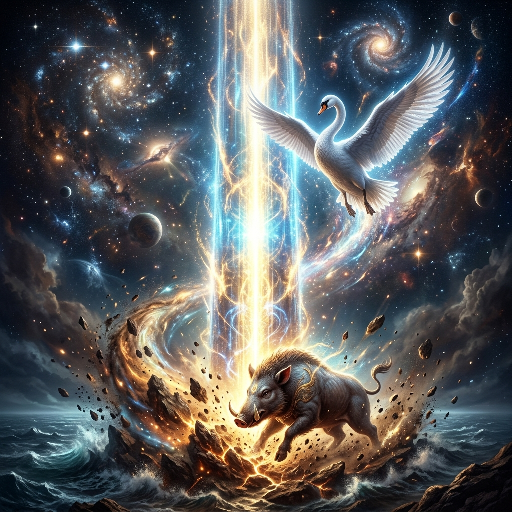
This is the most direct "wrongdoing" involving a deliberate lie to claim superiority among the Gods.
Brahma and Vishnu fought over who was supreme. Shiva appeared as an endless pillar of fire (Jyotirlinga) and challenged them to find its ends.
Unable to find the top, Brahma deliberately lied, claiming he had reached the summit, and produced a false witness to corroborate his deceit.
Shiva Purana, Vidyesvara Samhita, Chapters 6–8.
Brahma finds the Ketaki flower falling from the top and convinces it to lie for him.
Brahma tells Vishnu he reached the top. Shiva then manifests from the pillar, exposing Brahma's deceit.
Shiva cursed Brahma, declaring that he would never have a place in temples or be worshipped by the public again.
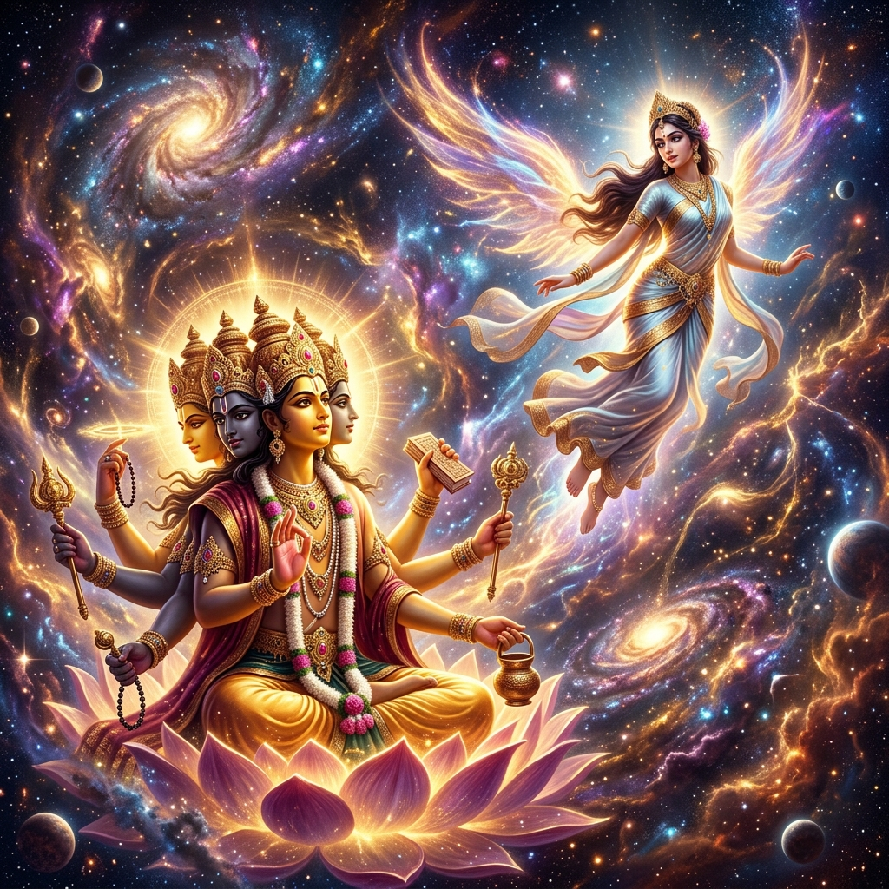
This incident highlights Brahma's inability to control his senses toward his "daughter" (creation).
Brahma created a beautiful woman named Shatarupa (also called Savitri or Saraswati) to assist in creation.
He became so infatuated that he sprouted four heads to follow her movements and a fifth head when she tried to fly above him to escape his gaze.
Matsya Purana, Chapter 3, Verses 32–43.
Brahma's infatuation is described as he keeps staring at her beauty.
Mentions the sprouting of the fifth head as she tried to ascend to heaven.
For this "licentious" and "unholy" behavior, Shiva's form Bhairava cut off the fifth head.
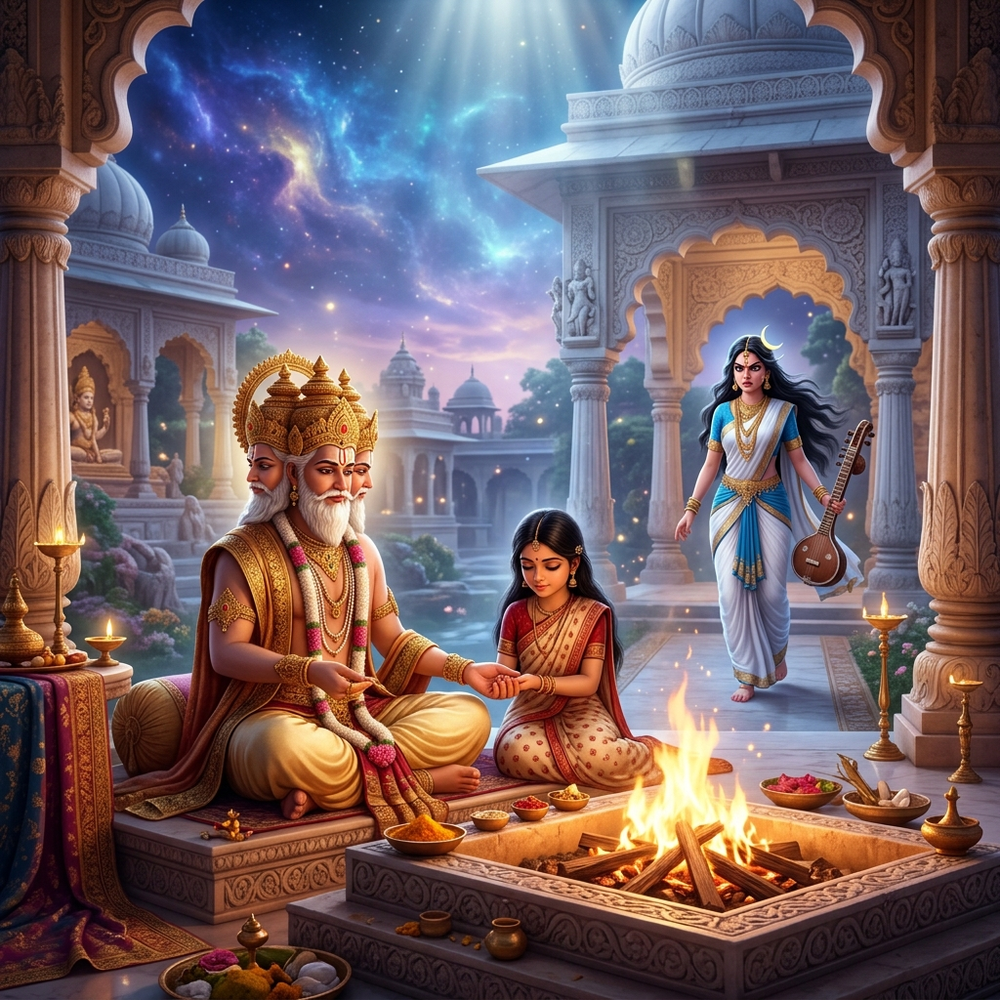
Brahma's impatience during a sacred ritual led to a curse from his first wife.
Brahma was performing a grand Yajna (sacrifice) at Pushkar. The ritual required his wife, Saraswati, to be present.
When Saraswati was delayed, Brahma grew impatient and married a milkmaid named Gayatri on the spot to continue the ritual without her.
Padma Purana, Shrishti Khanda, Chapter 17.
Describes Brahma's anger at the delay and his hasty marriage to Gayatri.
Saraswati arrives, sees another woman in her seat, and curses Brahma.
Saraswati cursed him, stating he would be worshipped only in Pushkar and nowhere else on Earth.
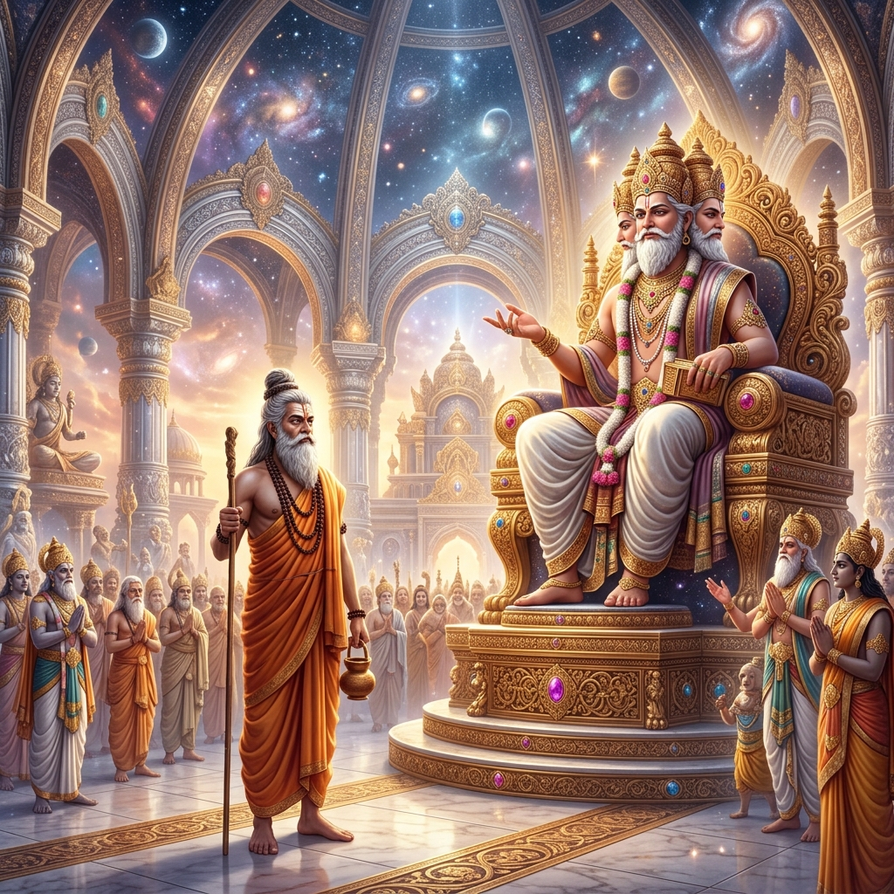
This incident demonstrates Brahma's ego (Rajoguna) getting the better of him.
Sage Bhrigu was sent to test which of the Trinity (Brahma, Vishnu, Shiva) was most worthy of being the supreme deity for a sacrifice.
When Bhrigu arrived at Brahma-loka, Brahma was so absorbed in his own importance (or music) that he did not stand up or offer the customary welcome to the sage.
Padma Purana, Uttara Khanda, Chapter 255 (also mentioned in Bhagavata Purana, Canto 10, Chapter 89).
Bhrigu notes Brahma's arrogance and total lack of hospitality.
Bhrigu cursed Brahma, declaring that because he was filled with "foulness" (ego), no Brahmin would ever offer him worship.
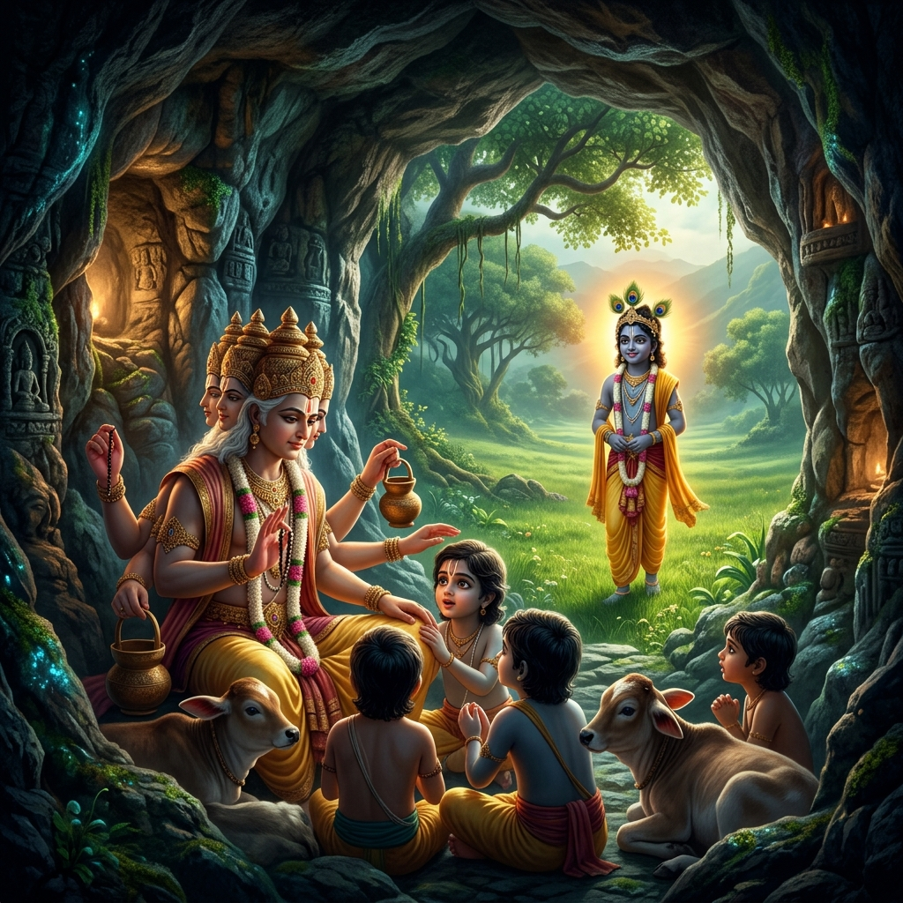
In this incident, Brahma attempted to test the divinity of Lord Krishna by kidnapping his friends and cattle.
After Krishna killed the demon Aghasura, Brahma was curious to see if this child was truly the Supreme Lord.
He used his mystical powers to steal and hide all of Krishna's cowherd friends and their calves in a cave.
Srimad Bhagavata Purana, Canto 10, Chapter 13.
Describes how Brahma led the boys and calves away to a secret place while Krishna was looking for them.
Krishna simply expanded himself into identical forms of all the boys and calves for a full year until Brahma realized his mistake and surrendered.
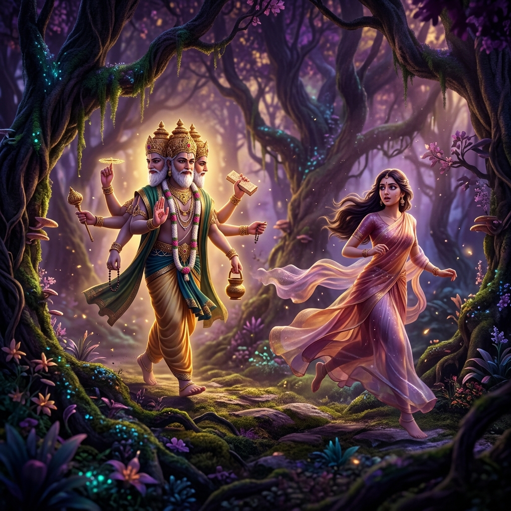
In some Kalpas (aeons), the story of Brahma's infatuation involves a deity named Sandhya (the Twilight).
Brahma created Sandhya and immediately became overwhelmed by desire for her.
He pursued her relentlessly, ignoring the moral boundaries between a creator and his creation.
Siva Purana, Rudra-Samhita, Sati-Khanda, Chapter 2–5 (also referenced in Bhagavata Purana 3.31.36).
States that Brahma was bewildered by the charms of his own daughter and shamelessly pursued her.
This behavior led the other gods and sages to condemn him, and in many versions, Shiva intervened to punish this "licentious" behavior.
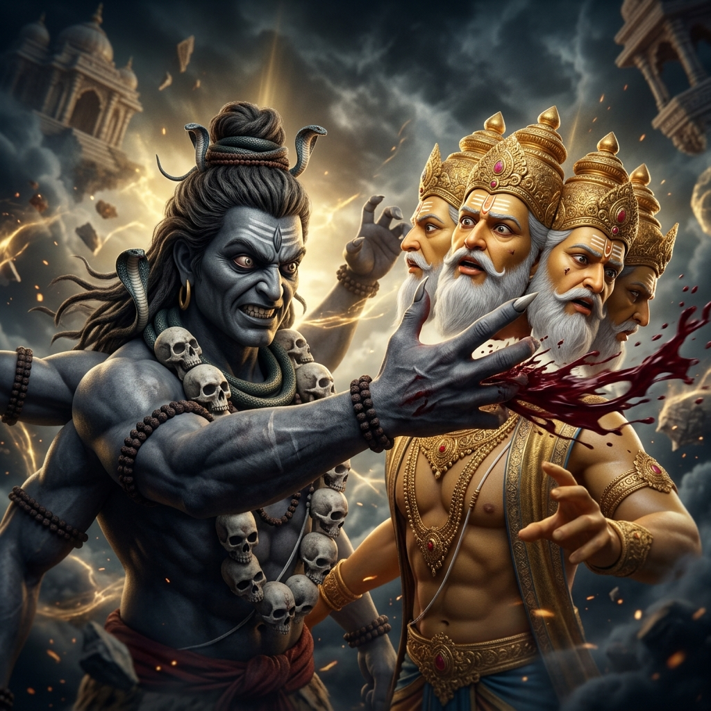
There are accounts where Brahma's arrogance led him to insult Shiva's appearance, which resulted in immediate punishment.
During a meeting of the gods, Shiva appeared in a fierce or "unrefined" form.
Brahma, filled with pride, mocked Shiva and claimed he was the only true supreme father, treating Shiva as a lowly subordinate.
Shiva Purana, Satarudra-samhita, Chapter 8.
Brahma's fifth head is described as "insolent" and constantly speaking ill of the divine.
Shiva manifested as Kaal Bhairav and used his thumbnail to slice off the offending fifth head as a lesson in humility.
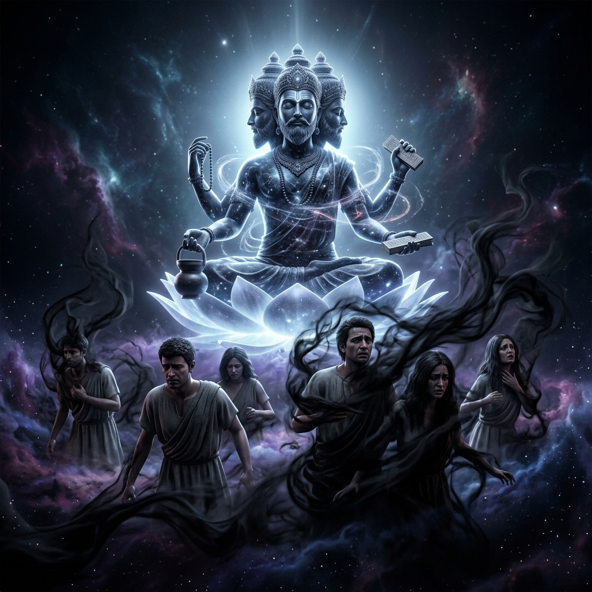
In a more philosophical critique found in certain Puranic commentaries, Brahma is viewed as the source of "biological" problems.
Brahma created the material world and the physical bodies of living beings.
Scholars like Devdutt Pattanaik note that by creating organic life, Brahma also created hunger, desire, and fear of death.
Unlike Vishnu (who preserves) and Shiva (who liberates), Brahma is the one who "traps" souls in the cycle of physical suffering and biological need.
Because he is the "Creator of Bondage," many schools of thought suggest he is not worshipped as a savior, but rather seen as the one who initiated the struggle for survival.
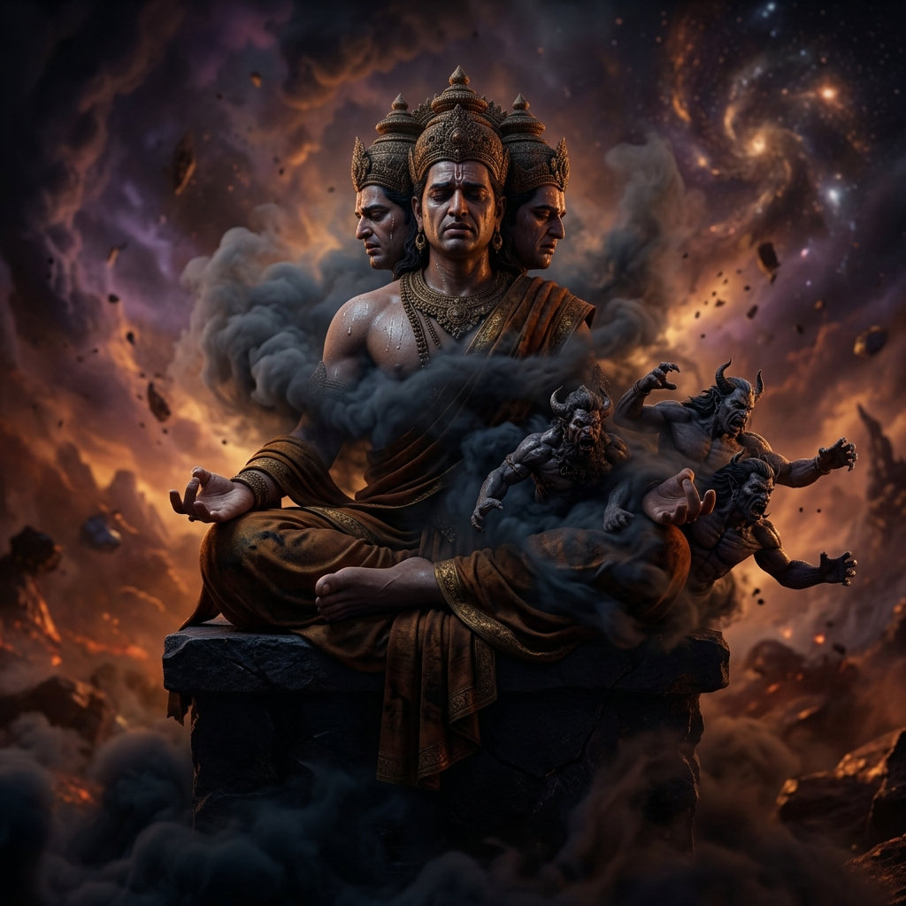
Brahma is often critiqued for creating the "darker" aspects of existence, sometimes by mistake or through a lack of self-control.
During the process of creation, Brahma became frustrated and filled with darkness.
He created the Asuras (demons) from his thighs. Immediately after, he became so lustful for a female form that he had to abandon his own body.
Srimad Bhagavata Purana, Canto 3, Chapter 20, Verses 21-23.
Describes Brahma giving up the body that was "overtaken by hunger and anger" and "darkened by passion."
This act populated the universe with chaotic forces that constantly war with the gods.
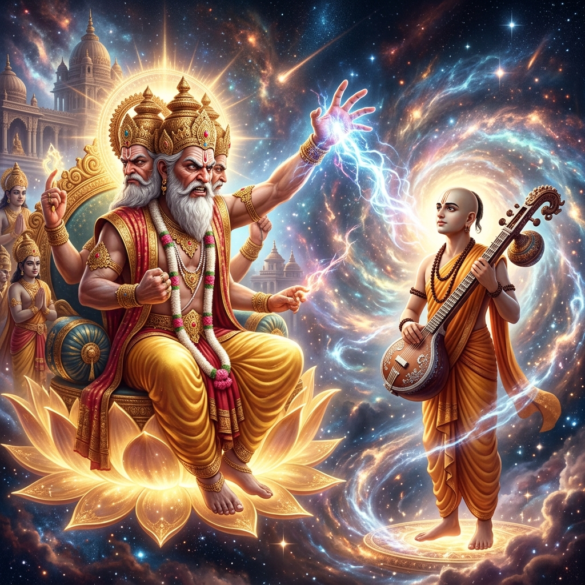
Brahma's anger often flared when his children chose spiritual paths over the physical work of creation.
Brahma ordered his son, Sage Narada, to marry and help populate the world.
When Narada refused, wanting to stay a celibate devotee, Brahma lost his temper and used his power to punish his own offspring for seeking enlightenment.
Narada Purana, Part 1, Chapter 3.
Brahma curses Narada to become a "Gandharva" (a celestial singer) known for his lustful nature, stripping him of his wisdom for a time.
Narada cursed Brahma back, stating that Brahma would never be worshipped and his wisdom would always be clouded by desire.
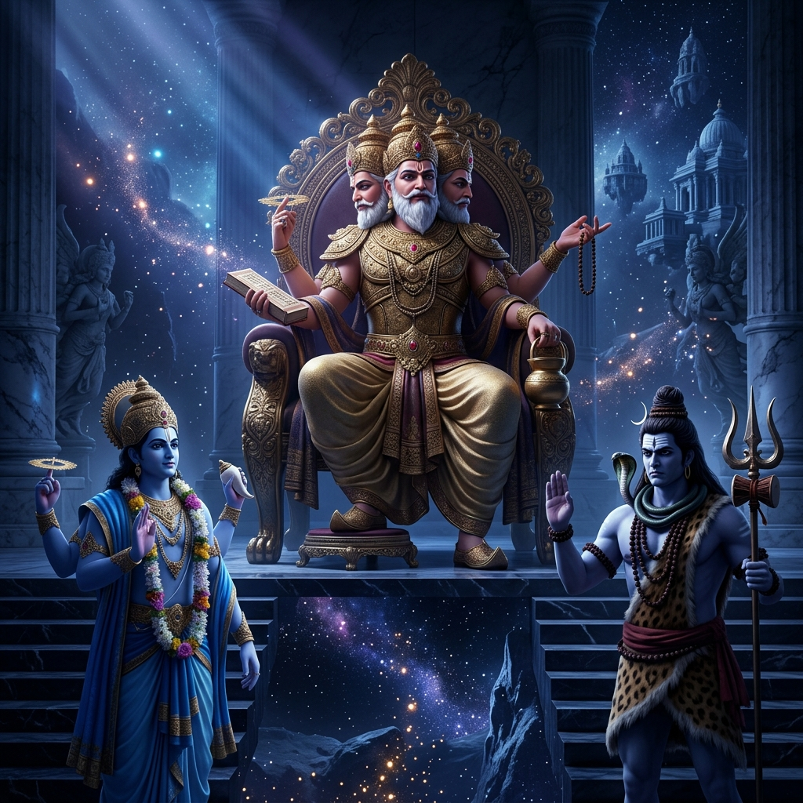
Brahma frequently claimed he was the only creator, ignoring that he himself originated from the navel of Vishnu.
In various meetings of the gods, Brahma spoke with extreme ego, claiming to be the supreme master of all.
He claimed that even Shiva and Vishnu were his subordinates, which disturbed the balance of the universe and showed a complete lack of humility.
Kurma Purana, Purva-bhaga, Chapter 9.
Brahma argues with Vishnu, claiming, "I am the self-born, the master of the universe; you are born from me."
Shiva appeared and had to humble Brahma by showing him his true place in the cosmic hierarchy.
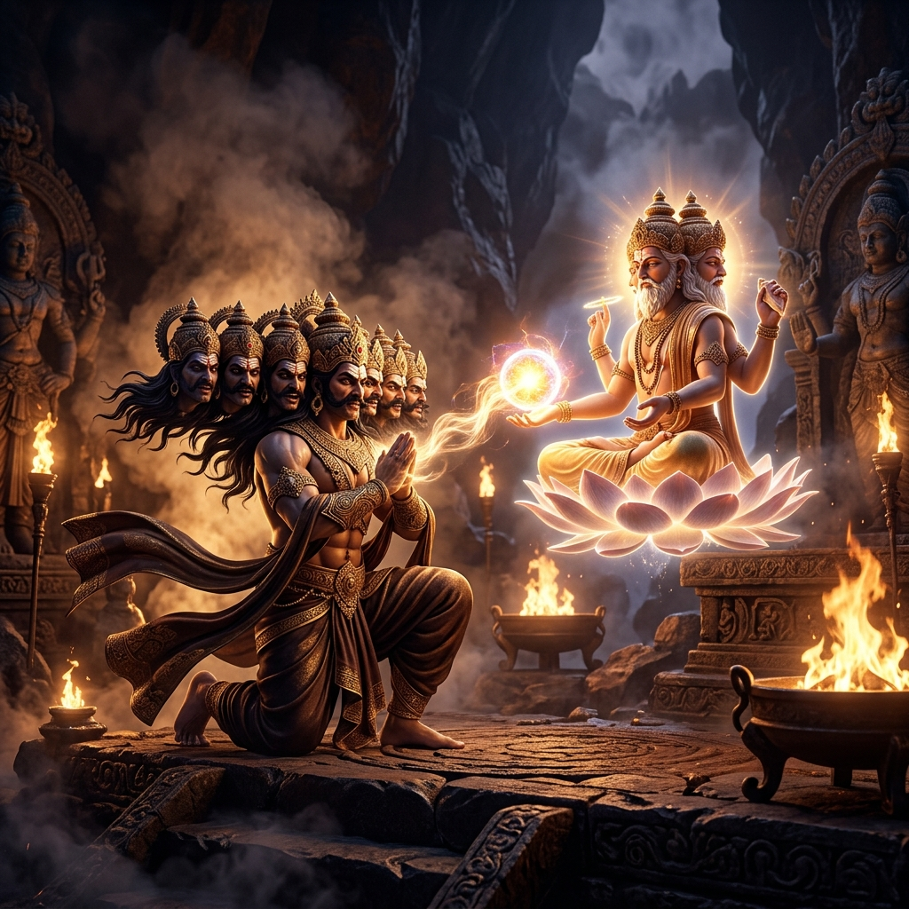
Brahma's most frequent "wrong" is his lack of foresight when granting boons to evil beings.
The demon king Ravana performed penance to Brahma to gain invincibility.
Despite knowing Ravana's evil intent, Brahma gave him incredible power and directed him toward Shiva to obtain the Atma-Linga (the soul of Shiva), knowing full well the havoc Ravana would cause.
Shiva Purana, Kotirudra-samhita, Chapter 28.
This chapter describes Brahma's role in empowering Ravana, which led to the near-destruction of the world until Vishnu intervened as Rama.
Ravana used this power to terrorize the three worlds, proving that Brahma's boons often prioritized ritualistic rules over the greater moral good.
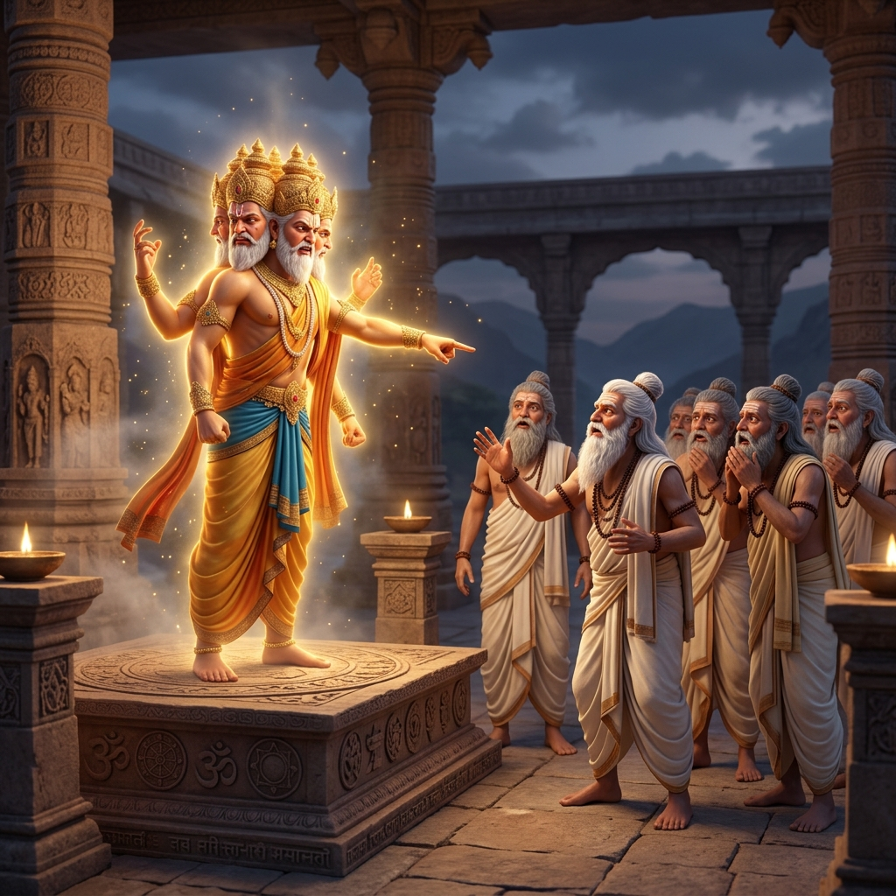
Brahma was known to be sensitive to criticism from his own created sages (Rishis).
When the sages questioned Brahma's infatuation with the woman Shatarupa, they called his behavior "un-Vedic" and immoral.
Instead of repenting, Brahma became furious and cursed his own sons (the Manasaputras) for their "insolence" in pointing out his flaws.
Skanda Purana, Mahesvara Khanda, Chapter 35.
This highlights Brahma's inability to take moral advice, leading to friction within the divine family and further questioning of his supreme status.
This event showed that Brahma often valued his own ego and desire over the righteous guidance of the sages, further alienating him from divine worship.